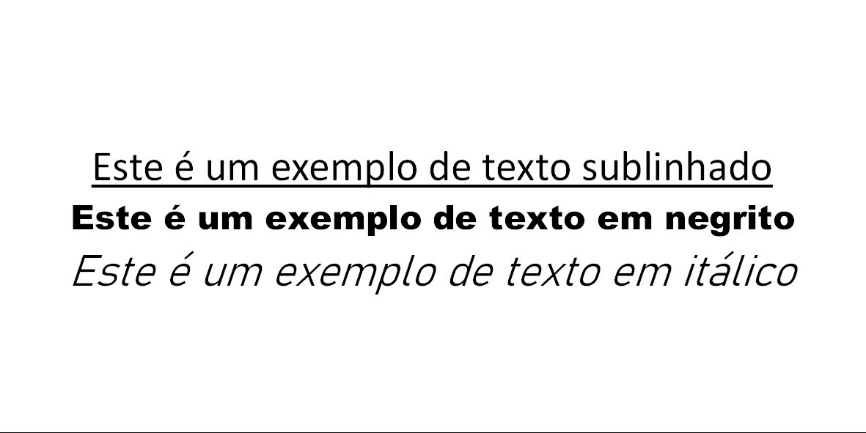
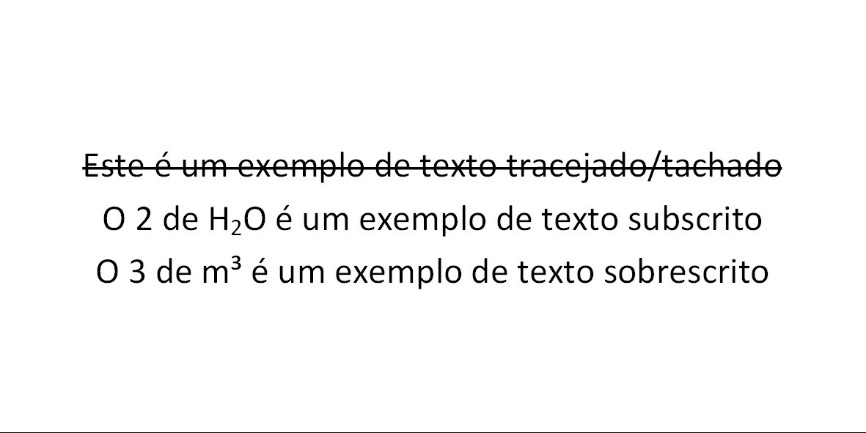
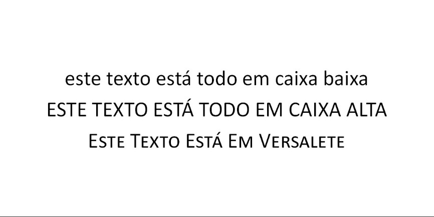

Além de podermos dividir as fontes por categorias, podemos atribuir propriedades à parte para a tipografia, cada caractere em cada família de fontes possui suas variantes de acordo com suas propriedades. Vejamos as propriedades que podemos atribuir ao texto:
As fontes possuem “peso”, que na realidade corresponde à espessura da haste, uma fonte com peso maior aparece mais escura e tem mais destaque. O peso da fonte vai desde o “fio de cabelo”, “hair”, até o “bolder”, chamado ainda de "black". O estilo negrito é o peso médio de uma fonte.
Itálico corresponde à inclinação da letra e costuma ser utilizado para dar ênfase ao texto.
Como o nome diz, acrescenta uma linha abaixo do texto, é utilizado para destacar parte do texto.
Acrescenta uma linha em cima do texto e costuma ser utilizado para marcar um texto inválido, excluído ou que não cabe no contexto do parágrafo.
Utilizado para escrever texto com fonte menor e abaixo da linha de tipos, um exemplo de subscrito é o 2 de H2O.
Utilizado para escrever texto com fonte menor e acima da linha de tipos, um exemplo de sobrescrito é o 3 de 2m3 ou o a de 1a.
A propriedade versalete permite com que todas as letras minúsculas fiquem maiúsculas permanecendo com o mesmo tamanho das minúsculas. É utilizado geralmente em títulos.
De acordo com o software utilizado, mais opções para formatação de caractere podem estar disponíveis fornecendo efeitos gráficos diversos para estilização dos caracteres num texto, dentre eles inclui-se Cor de Realce ou Marcador, que consiste numa cor de fundo utilizada para destacar uma linha, Cor de Contorno, que consistem em aplicar uma cor diferente às bordas da letra em relação à cor de preenchimento, Brilho e Sombra, que consistem efeitos desfocados de destaque semelhantes aos já estudados nesta apostila. Veremos os principais efeitos dessa categoria nos próximos capítulos ao formatar nossos trabalhos.